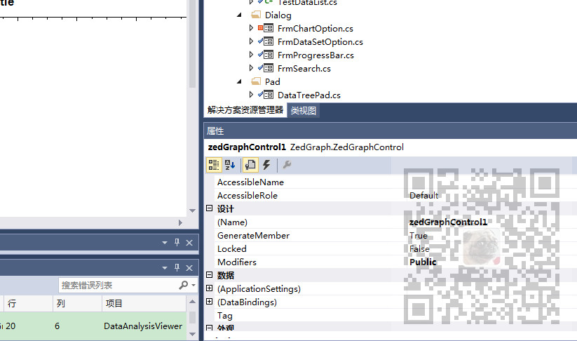

Winforn中设置ZedGraph曲线图的属性、坐标轴属性、刻度属性：
https://blog.csdn.net/BADAO_LIUMANG_QIZHI/article/details/100112573
在主窗体中有一个ZedGraphControl控件，如果要在本窗体获取此控件对象则通过：
this.zedGraphControl1
其中zedGraphControl1是空间ZedGraphControl的name属性。

如果在另一个窗体中获取此控件对象并对其进行属性设置的话，正常逻辑是
声明主窗体对象main,然后main.zedGraphControl1去调用。
但是试过之后返现却不能对其属性进行更改。
注：
博客主页：
https://blog.csdn.net/badao_liumang_qizhi
关注公众号
霸道的程序猿
获取编程相关电子书、教程推送与免费下载。
在包含ZedGraphControl对象的主窗体中的load事件中将this.zedGraphControl1赋值给一个全局属性，然后在
另一个窗体中调用全局属性即可。
在load事件中：
Global.zedGraphControl1 = this.zedGraphControl1;
全局属性声明：
public class Global
{
#region 单例实现
private static string _lockFlag = "GlobalLock";
private static Global _instance;
private Global()
{
}
public static Global Instance
{
get
{
lock (_lockFlag)
{
if (_instance == null)
{
_instance = new Global();
}
return _instance;
}
}
}
#endregion
public static ZedGraphControl zedGraphControl1;
public ZedGraphControl ZedGraphControl1
{
get { return ZedGraphControl1; }
set { ZedGraphControl1 = value; }
}
}
}
在另一个窗体中调用：
DataChartHelper.RefreshPane(Global.zedGraphControl1);